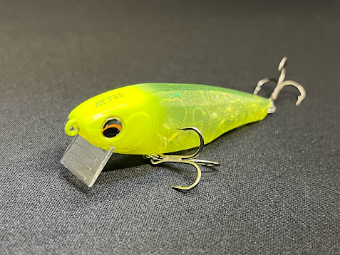
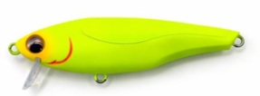
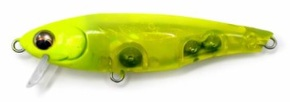
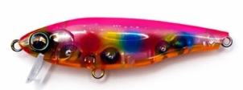
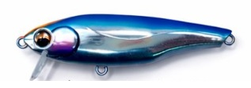

ALTER(オルター)73S
オルター73S（ALTER 73S）はunder up（アンダーアップ）のシンキングペンシルです。
「状況で特性を選べる。」リップを付け外しするだけで、表層を弾丸のように飛んでいく表層スナイパーと、流れの中でも沈まず一枚下のレンジをキープできる中層ランナーの2役に切り替わる革新的なリップ着脱式シンペン。

スペック
- メーカー
- pickup
- 長さ
- 73 mm
- 重さ
- 12.5 g
- フック
- #8×2
- レンジ
- 0-20 cm(リップレス)40㎝～（リップイン）
- タイプ
- シンキングペンシル
- 沈下タイプ
- シンキング
- アクション
- テールフリップアクション
- ターゲット
- シーバス
- 価格
- 2,200円 (税込)
- 開発者
- 佐藤ユウト
- 発売日
- 2026-05-29
▼今すぐチェック

オルター73Sの特徴
「1本2役」リップの脱着で別ルアーに化ける革新的シンペン
-
現場で切り替えられるリップ着脱システム
オルター73Sはリップの着脱という簡単な操作だけで全く異なる特性に変化可能。タックルボックスの省スペース化と釣り場での素早い対応を両立。
-
ケツ振りスイングアクション＋流れで発動するフラつき
タダ巻きでは安定したスイングアクションを維持し、流れのヨレや潮目を通過した瞬間に一瞬のフラつきが発生してバイトを誘発する。
-
リップレス時の飛距離が抜群
リップレス状態では空気抵抗が極限まで少なくなり、弾丸のような直線的な弾道で飛んでいく。
12.5gというウェイトも相まってシンペンカテゴリでは高い飛距離性能を発揮。
リップレスとリップインの使い分け
🔵 リップレス
弾丸飛行で遠投性能が最大に。着水後は浮き上がりが早く、表層〜水面下20cmのレンジを安定してキープ。引き波を出しながらの表層使用も可能。バチ抜け・ハクパターン・活性が高く表層を意識しているシーバスに。
🟠 リップイン
流れの中でも浮き上がらない。ダウンの釣りや流れが効いたエリアで通常シンペンが浮き上がってしまう状況でも一枚下のレンジをしっかりキープ。ドリフト・中層攻略・デイゲームのボトム付近への接近に。
オルター73Sの使い方
基本はただ巻き。リップレスはロッドを立ててデッドスロー〜スローリトリーブで表層を引く。リップインはロッドを寝かせてミディアムリトリーブで中層のレンジをキープする。
どちらも「流れの変化でフラつきが入る」という同じアクション特性を持つため、まずリップレスで表層の反応を確認し、反応がなければリップインに切り替えてレンジを下げるという流れが定石。ドリフトではリップインが特に使いやすく、ラインテンションを調整しながら流れに乗せることで自発的なフラつきが頻発する。
オルター73Sの得意な状況
河川・港湾の明暗部・橋脚周りなど流れが絡むシチュエーション全般に強い。特に潮目・流れのヨレでのフラつきバイトが多発するため、流れが複雑なポイントほどオルター73Sの真価が出る。
バチ抜けシーズンはリップレスで表層を引き、スレが進んだらリップインで一枚下のレンジを探るローテーションが定石。デイゲームでは反射的なリアクションバイトを誘いやすいリップインのリトリーブ変化が有効。
ワンポイント
リップの着脱は現場でも簡単にできるため、同じポイントでリップレス→反応なし→リップインという切り替えがスムーズに行える。
リップを紛失しないよう、外した際はベストのジッパーポケットなどに入れる習慣をつけよう。フック標準サイズの確認をしたうえでフックチューニングを行うとフッキング率がさらに向上する。
オススメカラー

#001 マットチャート視認性が高く濁り・ローライト時の定番。ルアーの動きを確認しやすい入門カラー。

#002 チャートミストマットチャートより透け感のあるチャート系。常夜灯周りのナイトゲームに強い。

#006 ネオンサイン派手なアピール系カラー。濁り潮・マズメ時のリアクションバイト誘発に有効。

#008 ブルーバックミラーイワシ系のナチュラルフラッシングカラー。澄み潮・デイゲームの基本。
画像出典:pickup公式HP
オルター73Sに似ているルアー
- UNIFORCE100F / 130F（レガーレ）——「リップを変えてレンジとアクションを切り替える」という発想が最も近い兄弟的存在。ただしユニフォースはリップではなく「ヘッドごと」交換するMAG HEAD特許技術を採用したフローティングミノー。レンジ変化もショートリップ20〜40cm・ロングリップ100cm〜とオルター73Sより大きい。同じ「1本2役」コンセプトを別アプローチで実現した関係。
- スネコン90S（ブルーブルー）——同じシンペン系で流れのドリフト特化。スネコンはS字系アクション、オルター73Sはケツ振り系という違い。
- SHURIPEN70（レガーレ）——同じ73mm前後のシンペンでバチ・マイクロベイト特化。浮上アクション特化のSHURIPEN70とレンジを切り替えられるオルター73Sは役割が異なる。